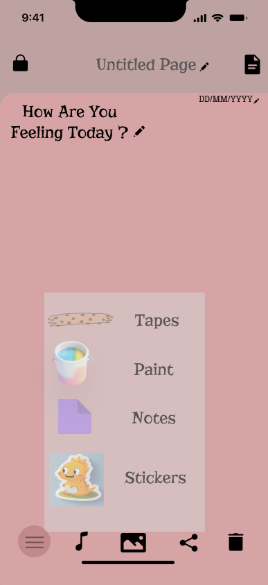
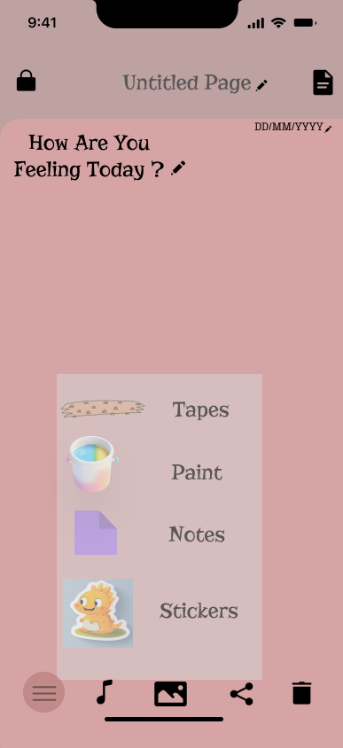

This project is a mobile-first journaling app UI concept designed to give users complete creative control over their personal diary experience. The idea was to move beyond traditional journaling apps and create something that truly feels like a personal notebook — customizable, expressive, and unique to each individual. The design was created in Figma with a focus on flexibility, personalization, and emotional connection.
Most journaling applications offer limited customization options. Users are often restricted to fixed layouts, predefined themes, and minimal editing features. This makes the experience feel generic and less personal. Additionally, many apps do not allow users to fully express themselves through creative elements like stickers, tapes, fonts, or multimedia additions. The lack of personalization reduces emotional attachment and long-term engagement.
To design a journaling application that allows users to fully personalize their diary space — including themes, layouts, colors, and even the app name — so that it feels like their own private notebook rather than a standard template-based app. The goal was to create a clean, distraction-free, and highly customizable environment that encourages creativity and self-expression.
The proposed design introduces extensive personalization features: Users can change themes and color palettes across all pages. The app name can be customized, making it feel like their own personal book. Multiple layout options allow users to structure pages in different styles. Creative elements like stickers, tapes, fonts, and decorative components can be added. Users can insert images, songs, and videos into their entries. Specific pages can be locked for privacy. Prompts and journaling questions can be edited or customized. The interface is intentionally clean and minimal to ensure users feel calm and unrestricted while designing their own journaling space.
This design was created as a mobile-first interface, focusing on smartphone usability. The layout prioritizes touch-friendly elements, intuitive navigation, and a vertically structured editing experience to simulate a real digital diary app.
Figma (UI Design & Prototyping)


 
